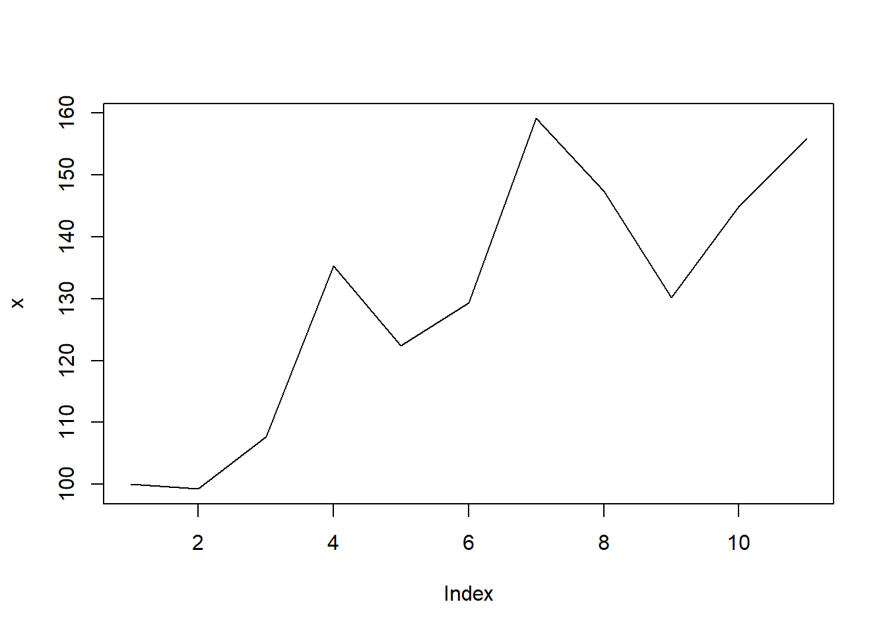

library(tidyverse)
#> ── Attaching packages ─────────────────────────────────────── tidyverse 1.3.2 ──
#> ✔ ggplot2 3.3.6 ✔ purrr 0.3.4
#> ✔ tibble 3.1.8 ✔ dplyr 1.0.9
#> ✔ tidyr 1.2.0 ✔ stringr 1.4.0
#> ✔ readr 2.1.2 ✔ forcats 0.5.1
#> ── Conflicts ────────────────────────────────────────── tidyverse_conflicts() ──
#> ✖ dplyr::filter() masks stats::filter()
#> ✖ dplyr::lag() masks stats::lag()
library(readxl)
library(writexl)
library(here)
#> here() starts at C:/Users/piyayut.chi/github/workshop/2022-10_R
library(economiccomplexity)
#>
#> Attaching package: 'economiccomplexity'
#>
#> The following object is masked from 'package:stats':
#>
#> density
library(gravity)
#>
#> Attaching package: 'gravity'
#>
#> The following object is masked from 'package:stats':
#>
#> nls
library(modelsummary)
library(flextable)
#>
#> Attaching package: 'flextable'
#>
#> The following object is masked from 'package:purrr':
#>
#> composeTrade Analysis
Introduction
The objective of this section is to use R for international trad analysis including
- Compute annual growth rate
- Calculate trade indicies
- Estimate gravity model
Load Packges
Import data
# bilateral trade data from 2011 to 2020 using HS92 at 2 digit level
baci_extra <- readRDS(here("data/baci_extra.rds"))
baci_extra
#> # A tibble: 8,707,706 × 14
#> t i i_iso3c i_name i_reg…¹ j j_iso3c j_name j_reg…² k k_name
#> <dbl> <dbl> <chr> <chr> <chr> <dbl> <chr> <chr> <chr> <chr> <chr>
#> 1 2011 4 AFG Afghan… Asia 12 DZA Alger… Africa 39 Plast…
#> 2 2011 4 AFG Afghan… Asia 12 DZA Alger… Africa 40 Rubber
#> 3 2011 4 AFG Afghan… Asia 12 DZA Alger… Africa 84 Indus…
#> 4 2011 4 AFG Afghan… Asia 12 DZA Alger… Africa 87 Vehic…
#> 5 2011 4 AFG Afghan… Asia 24 AGO Angola Africa 19 Prepa…
#> 6 2011 4 AFG Afghan… Asia 24 AGO Angola Africa 21 Misce…
#> 7 2011 4 AFG Afghan… Asia 24 AGO Angola Africa 32 Dyes,…
#> 8 2011 4 AFG Afghan… Asia 24 AGO Angola Africa 39 Plast…
#> 9 2011 4 AFG Afghan… Asia 24 AGO Angola Africa 40 Rubber
#> 10 2011 4 AFG Afghan… Asia 24 AGO Angola Africa 48 Paper…
#> # … with 8,707,696 more rows, 3 more variables: k_sector <chr>, v <dbl>,
#> # q <dbl>, and abbreviated variable names ¹i_region, ²j_region
# trade data of exporter from 2011 to 2020 using HS92 at 2 digit level
baci_extra_i <- readRDS(here("data/baci_extra_i.rds"))
baci_extra_i
#> # A tibble: 193,930 × 13
#> t i i_iso3c i_name i_region k k_name k_sec…¹ v q
#> <dbl> <dbl> <chr> <chr> <chr> <chr> <chr> <chr> <dbl> <dbl>
#> 1 2011 4 AFG Afghanistan Asia 01 Live … Agricu… 1.00e-1 5.5 e-2
#> 2 2011 4 AFG Afghanistan Asia 02 Meat Agricu… 1.49e-1 6.74e+1
#> 3 2011 4 AFG Afghanistan Asia 03 Fish Agricu… 1.11e-3 8.5 e-2
#> 4 2011 4 AFG Afghanistan Asia 04 Diary… Agricu… 5.02e-1 2.85e+2
#> 5 2011 4 AFG Afghanistan Asia 05 Anima… Agricu… 4.36e-1 2.01e+2
#> 6 2011 4 AFG Afghanistan Asia 06 Plants Agricu… 1.1 e-5 1 e-3
#> 7 2011 4 AFG Afghanistan Asia 07 Veget… Agricu… 2.67e+1 1.25e+5
#> 8 2011 4 AFG Afghanistan Asia 08 Fruit… Agricu… 1.66e+2 1.13e+5
#> 9 2011 4 AFG Afghanistan Asia 09 Coffe… Agricu… 7.87e+0 4.90e+3
#> 10 2011 4 AFG Afghanistan Asia 10 Cerea… Agricu… 5.05e-2 1.58e+2
#> # … with 193,920 more rows, 3 more variables: pop <dbl>, gdp <dbl>,
#> # gdpcap <dbl>, and abbreviated variable name ¹k_sector
# data for gravity model
gravity_0019 <- readRDS(here("data/gravity_0019.rds"))
gravity_0019
#> # A tibble: 1,230,080 × 15
#> year iso3_o iso3_d tradeflo…¹ gdp_o gdp_d dist distw contig rta comla…²
#> <int> <chr> <chr> <dbl> <dbl> <dbl> <dbl> <dbl> <int> <int> <int>
#> 1 2000 ABW ABW NA 1.87e6 1.87e6 5.22 25.1 0 0 0
#> 2 2001 ABW ABW NA 1.92e6 1.92e6 5.22 25.1 0 0 0
#> 3 2002 ABW ABW NA 1.94e6 1.94e6 5.22 25.1 0 0 0
#> 4 2003 ABW ABW NA 2.02e6 2.02e6 5.22 25.1 0 0 0
#> 5 2004 ABW ABW NA 2.23e6 2.23e6 5.22 25.1 0 0 0
#> 6 2005 ABW ABW NA 2.33e6 2.33e6 5.22 25.1 0 0 0
#> 7 2006 ABW ABW NA 2.42e6 2.42e6 5.22 25.1 0 0 0
#> 8 2007 ABW ABW NA 2.62e6 2.62e6 5.22 25.1 0 0 0
#> 9 2008 ABW ABW NA 2.79e6 2.79e6 5.22 25.1 0 0 0
#> 10 2009 ABW ABW NA 2.50e6 2.50e6 5.22 25.1 0 0 0
#> # … with 1,230,070 more rows, 4 more variables: pop_o <dbl>, pop_d <dbl>,
#> # gdpcap_o <dbl>, gdpcap_d <dbl>, and abbreviated variable names
#> # ¹tradeflow_baci, ²comlang_off
# additional data
country_codes <- baci_extra_i |> distinct(i, i_iso3c, i_name, i_region)
country_codes
#> # A tibble: 229 × 4
#> i i_iso3c i_name i_region
#> <dbl> <chr> <chr> <chr>
#> 1 4 AFG Afghanistan Asia
#> 2 8 ALB Albania Europe
#> 3 12 DZA Algeria Africa
#> 4 16 ASM American Samoa Other
#> 5 20 AND Andorra Europe
#> 6 24 AGO Angola Africa
#> 7 28 ATG Antigua and Barbuda North America
#> 8 31 AZE Azerbaijan Asia
#> 9 32 ARG Argentina South America
#> 10 36 AUS Australia Oceania
#> # … with 219 more rows
product_codes <- baci_extra_i |> distinct(k, k_name, k_sector)
product_codes
#> # A tibble: 96 × 3
#> k k_name k_sector
#> <chr> <chr> <chr>
#> 1 01 Live animals Agriculture
#> 2 02 Meat Agriculture
#> 3 03 Fish Agriculture
#> 4 04 Diary products Agriculture
#> 5 05 Animal products Agriculture
#> 6 06 Plants Agriculture
#> 7 07 Vegetables Agriculture
#> 8 08 Fruits and nuts Agriculture
#> 9 09 Coffee, tea and spices Agriculture
#> 10 10 Cereals Agriculture
#> # … with 86 more rowsAnnual growth rate
We follow average growth rate methods list in UNESCAP article link. There are 4 methods
- Arithematic
- Geometric
- Exponential
- Least-squared
Motivation
We simulate a time series that follows a compound growth formula. As show in plot below. The objective is to find a number that best represents growth rate.
set.seed(123) # make randomization reproducible
x0 <- 100
n <- 10
growth <- rep(0.05, n)
error <- rnorm(n, 0, 0.1)
x <- c(x0, (x0 * cumprod(1 + growth))*(exp(error)))
plot(x, type="l")
As menioned in the UNESCAP article, the appropriate choice depends on domain and realization of a series. General guideline for trade series is that we should follow either geometric or least-square method.
Implementation using R
Now let’s implement all four methods using R. We define 4 functions that compute average growth rate of each method.
- Arithmetic
growth_arithmetic <- function(vec) {
n <- length(vec)
(vec[n]/vec[1] - 1) / (n-1)
}
growth_arithmetic(x)
#> [1] 0.05578948- Geometric
growth_geometric <- function(vec) {
n <- length(vec)
(vec[n]/vec[1])**(1/(n-1)) - 1
}
growth_geometric(x)
#> [1] 0.04533096- Exponential
growth_exponent <- function(vec) {
n <- length(vec)
log(vec[n]/vec[1])/(n-1)
}
growth_exponent(x)
#> [1] 0.04433354- Least-squared
growth_ols <- function(vec) {
y <- vec
x <- seq_along(y)
result <- lm(log(y) ~ x)
(exp(coef(result))[['x']]) - 1
}
growth_ols(x)
#> [1] 0.04391861Simulation
We use a monte carlo simulation to illustrate the differnece between each methods. We assume that a series follow compound growth rate. We simulate 1000 series for 3, 4, 5, 10, and 20 periods. As we expect, the higher the number of periods(observations), the higher accuracy. Also, note that the least-squared approach produces less sd comparing to geometric approach as the former use more observation.
# define a function that simulate a time series of n periods for 1000 series
# and estimate growth for 4 methods
sim_growth <- function(n, seed = 123) {
set.seed(seed)
df <- tibble()
for (i in 1:1000) {
x0 <- 100
growth <- rep(0.05, n)
error <- rnorm(n, 0, 0.1)
x <- c(x0, (x0 * cumprod(1 + growth))*(exp(error)))
df[i, 'round'] <- i
df[i, 'g_ari'] <- growth_arithmetic(x)
df[i, 'g_geo'] <- growth_geometric(x)
df[i, 'g_exp'] <- growth_exponent(x)
df[i, 'g_ols'] <- growth_ols(x)
}
df
}
# make a for loop to see the difference by varying the number of periods
n <- c(3, 4, 5, 10, 20)
seed <- 123
res <- tibble()
for (i in seq_along(n)) {
res_ <- sim_growth(n[i], seed = seed) |>
summarize(
across(
g_ari:g_ols,
.fns = list(mean = mean, sd = sd),
.names = "{.col}_{.fn}"
)
)
res_[1, 'n_period'] <- n[i]
res <- bind_rows(res, res_)
}
res
#> # A tibble: 5 × 9
#> g_ari_mean g_ari_sd g_geo_mean g_geo…¹ g_exp…² g_exp…³ g_ols…⁴ g_ols…⁵ n_per…⁶
#> <dbl> <dbl> <dbl> <dbl> <dbl> <dbl> <dbl> <dbl> <dbl>
#> 1 0.0551 0.0395 0.0511 0.0355 0.0493 0.0337 0.0516 0.0349 3
#> 2 0.0561 0.0314 0.0508 0.0268 0.0493 0.0255 0.0508 0.0262 4
#> 3 0.0561 0.0250 0.0499 0.0205 0.0485 0.0195 0.0503 0.0196 5
#> 4 0.0634 0.0162 0.0498 0.0104 0.0486 0.00987 0.0500 0.00847 10
#> 5 0.0833 0.0133 0.0500 0.00523 0.0488 0.00498 0.0500 0.00342 20
#> # … with abbreviated variable names ¹g_geo_sd, ²g_exp_mean, ³g_exp_sd,
#> # ⁴g_ols_mean, ⁵g_ols_sd, ⁶n_periodExample
Let’s apply to real dataset. Suppose we want to make a table of export data of Thailand from 2016-2020 classified by products where each year has its own column (pivot wider). In addition, we compute two additional metrics: the average and growth rate from 2016-2020. To do that, we split our calculation into five steps:
- Filter
baci_extra_ifor country and year of interest.
# step1: filter data of interest
df <- baci_extra_i |>
filter(t %in% 2016:2020, i_iso3c == "THA") |>
arrange(t, i_iso3c, k)
df
#> # A tibble: 480 × 13
#> t i i_iso3c i_name i_reg…¹ k k_name k_sec…² v q pop
#> <dbl> <dbl> <chr> <chr> <chr> <chr> <chr> <chr> <dbl> <dbl> <dbl>
#> 1 2016 764 THA Thaila… Asia 01 Live … Agricu… 224. 1.21e5 68864.
#> 2 2016 764 THA Thaila… Asia 02 Meat Agricu… 748. 3.18e5 68864.
#> 3 2016 764 THA Thaila… Asia 03 Fish Agricu… 2041. 4.35e5 68864.
#> 4 2016 764 THA Thaila… Asia 04 Diary… Agricu… 288. 2.14e5 68864.
#> 5 2016 764 THA Thaila… Asia 05 Anima… Agricu… 47.2 1.38e4 68864.
#> 6 2016 764 THA Thaila… Asia 06 Plants Agricu… 137. 9.08e4 68864.
#> 7 2016 764 THA Thaila… Asia 07 Veget… Agricu… 1475. 1.46e6 68864.
#> 8 2016 764 THA Thaila… Asia 08 Fruit… Agricu… 1790. 1.44e6 68864.
#> 9 2016 764 THA Thaila… Asia 09 Coffe… Agricu… 78.9 6.17e4 68864.
#> 10 2016 764 THA Thaila… Asia 10 Cerea… Agricu… 4747. 1.07e7 68864.
#> # … with 470 more rows, 2 more variables: gdp <dbl>, gdpcap <dbl>, and
#> # abbreviated variable names ¹i_region, ²k_sector- Reshape the table using
pivot_wider.
# step2: make a wider table where year represent years
df_wide <- df |>
pivot_wider(
c(k, k_name, k_sector),
names_from = "t",
values_from = "v"
)
df_wide
#> # A tibble: 96 × 8
#> k k_name k_sector `2016` `2017` `2018` `2019` `2020`
#> <chr> <chr> <chr> <dbl> <dbl> <dbl> <dbl> <dbl>
#> 1 01 Live animals Agriculture 224. 216. 304. 311. 675.
#> 2 02 Meat Agriculture 748. 827. 1093. 1091. 1190.
#> 3 03 Fish Agriculture 2041. 1886. 1626. 1504. 1339.
#> 4 04 Diary products Agriculture 288. 314. 348. 356. 349.
#> 5 05 Animal products Agriculture 47.2 57.0 62.9 64.3 74.0
#> 6 06 Plants Agriculture 137. 137. 152. 148. 108.
#> 7 07 Vegetables Agriculture 1475. 1511. 1313. 932. 1034.
#> 8 08 Fruits and nuts Agriculture 1790. 2414. 2844. 4010. 4393.
#> 9 09 Coffee, tea and spices Agriculture 78.9 150. 153. 149. 134.
#> 10 10 Cereals Agriculture 4747. 5516. 5991. 4501. 3961.
#> # … with 86 more rows- Compute the average and growth rate using
group_byandsummarizetogether withmeanand ourgrowth_olsfunction.
# step3: compute summarize metrics
df_sum <- df |>
group_by(k) |>
summarize(
avg_1620 = mean(v, na.rm = TRUE),
growth_1620 = growth_ols(v) * 100
) |> ungroup()
df_sum
#> # A tibble: 96 × 3
#> k avg_1620 growth_1620
#> <chr> <dbl> <dbl>
#> 1 01 346. 29.2
#> 2 02 990. 12.8
#> 3 03 1679. -10.2
#> 4 04 331. 5.20
#> 5 05 61.1 10.8
#> 6 06 136. -3.83
#> 7 07 1253. -11.3
#> 8 08 3090. 25.9
#> 9 09 133. 11.1
#> 10 10 4943. -5.50
#> # … with 86 more rows- Combine result from step 2 and 3 using
left_join.
# step4: join two tables
df_combine <- df_wide |>
left_join(df_sum)
#> Joining, by = "k"
df_combine
#> # A tibble: 96 × 10
#> k k_name k_sec…¹ `2016` `2017` `2018` `2019` `2020` avg_1…² growt…³
#> <chr> <chr> <chr> <dbl> <dbl> <dbl> <dbl> <dbl> <dbl> <dbl>
#> 1 01 Live animals Agricu… 224. 216. 304. 311. 675. 346. 29.2
#> 2 02 Meat Agricu… 748. 827. 1093. 1091. 1190. 990. 12.8
#> 3 03 Fish Agricu… 2041. 1886. 1626. 1504. 1339. 1679. -10.2
#> 4 04 Diary produ… Agricu… 288. 314. 348. 356. 349. 331. 5.20
#> 5 05 Animal prod… Agricu… 47.2 57.0 62.9 64.3 74.0 61.1 10.8
#> 6 06 Plants Agricu… 137. 137. 152. 148. 108. 136. -3.83
#> 7 07 Vegetables Agricu… 1475. 1511. 1313. 932. 1034. 1253. -11.3
#> 8 08 Fruits and … Agricu… 1790. 2414. 2844. 4010. 4393. 3090. 25.9
#> 9 09 Coffee, tea… Agricu… 78.9 150. 153. 149. 134. 133. 11.1
#> 10 10 Cereals Agricu… 4747. 5516. 5991. 4501. 3961. 4943. -5.50
#> # … with 86 more rows, and abbreviated variable names ¹k_sector, ²avg_1620,
#> # ³growth_1620- Save to an excel file using
write_xlsx.
# step5: save to xlsx file
df_combine |> write_xlsx(here("output/4-1_export_growth_tha.xlsx"))Exercise
Use baci_extra_i to make a report of Rubber export of Indonesia classified by destinations from 2011-2015.
Trade indicators
Now let’s compute some trade indicators, we illustrate how to compute two indicators using economiccomplexity package.
RCA
Relative Comparative Advantage or Balassa index can be calculated using.
\[ RCA_{ik} = \frac{X_{ik}/\sum_{k \in K}X_{ik}}{\sum_{i \in I}{X_{ik}/\sum_{i \in I, k \in K}{X_{ik}}}} \]
where - \(X_{ik}\) is export flow from export country i of product k. - \(K\) is a set of all products. - \(I\) is a set of all exporters.
Example
Let’s apply to real dataset. Suppose we want to make a table of RCA of Thai export from 2016-2020 classified by products. To do that, we split our calculation into five steps:
- Filter
baci_extra_iby years of interest and then compute average export values of each exporter and products.
# step1: prepare data using average of 2016-2020
baci_1620 <- baci_extra_i |>
filter(t %in% 2016:2020) |>
group_by(country = i_iso3c, product = k) |>
summarize(value = mean(v, na.rm = TRUE)) |> ungroup()
#> `summarise()` has grouped output by 'country'. You can override using the
#> `.groups` argument.
baci_1620
#> # A tibble: 20,817 × 3
#> country product value
#> <chr> <chr> <dbl>
#> 1 ABW 01 0.0504
#> 2 ABW 02 0.285
#> 3 ABW 03 0.813
#> 4 ABW 04 0.240
#> 5 ABW 05 0.0395
#> 6 ABW 06 0.00962
#> 7 ABW 07 0.0633
#> 8 ABW 08 0.00758
#> 9 ABW 09 0.0303
#> 10 ABW 10 0.179
#> # … with 20,807 more rows- Compute Balassa Index (RCA) discrete version using
bifunction and compute Balassa Index (RCA) continuous version usingbifunction with argumentdiscrete = FALSE.
# step2: compute balassa index
# discrete version
bi <- balassa_index(baci_1620)
bi[1:5,1:5]
#> 5 x 5 sparse Matrix of class "dgCMatrix"
#> 01 02 03 04 05
#> ABW . . . . .
#> AFG . . . . 1
#> AGO . . . . .
#> AIA . . . . .
#> ALB . . 1 . 1
# continuous version
bi_dec <- balassa_index(baci_1620, discrete = FALSE)
bi_dec[1:5,1:5]
#> 5 x 5 sparse Matrix of class "dgCMatrix"
#> 01 02 03 04 05
#> ABW 0.182074925 0.183411718 0.572160123 0.226842695 0.304008119
#> AFG 0.733079532 0.012828700 0.007868169 0.016090110 5.765028244
#> AGO 0.004719163 0.001618441 0.528363433 0.003829926 0.001355654
#> AIA 0.007817558 0.267855408 0.083352596 0.097421771 0.851606651
#> ALB 0.283259587 0.099515781 2.120632069 0.113324743 2.134042921- Extract information of interest and add additional information.
# step3: extract information only agriculture hscode 1-24 of Thailand.
rca_tha <- bi_dec["THA", 1:24] |>
as.data.frame() |>
rownames_to_column() |>
as_tibble() |>
select(k = 1, RCA = 2)|>
left_join(product_codes, by = c("k" = "k")) |>
select(k, k_name, k_sector, RCA)
rca_tha
#> # A tibble: 24 × 4
#> k k_name k_sector RCA
#> <chr> <chr> <chr> <dbl>
#> 1 01 Live animals Agriculture 1.07
#> 2 02 Meat Agriculture 0.543
#> 3 03 Fish Agriculture 1.01
#> 4 04 Diary products Agriculture 0.267
#> 5 05 Animal products Agriculture 0.401
#> 6 06 Plants Agriculture 0.458
#> 7 07 Vegetables Agriculture 1.20
#> 8 08 Fruits and nuts Agriculture 1.72
#> 9 09 Coffee, tea and spices Agriculture 0.184
#> 10 10 Cereals Agriculture 2.93
#> # … with 14 more rows- Save to an excel file using
write_xlsx.
# step4: save as excel file
rca_tha |> write_xlsx(here("output/4-2_rca_tha.xlsx"))Exercise
Use baci_extra_i to make a report of RCA (continuous version) of every exporters of Rubber product from 2016-2020.
Complexity mesures
You can compute complexity indexes (e.g. such as the Economic Complexity Index and Product Complexity Index) by using complexity_measures(). The calculations methods are fitness (default), reflections, eigenvalues. See (Mariani et al. 2015) for the methodological details.
The eigenvalues also calls the reflections methods in order to correct the index sign in some special cases when the correlation between the output from both methods is negative.
Example
Suppose we want to compute complexity measure using data from 2016 to 2020. We break down into 4 steps
- Prepare data by filtering
baci_extra_iby years of interest and then compute average export values of each exporter and products.
# step1: prepare data using average of 2016-2020
baci_1620 <- baci_extra_i |>
filter(t %in% 2016:2020) |>
group_by(country = i_iso3c, product = k) |>
summarize(value = mean(v, na.rm = TRUE)) |> ungroup()
#> `summarise()` has grouped output by 'country'. You can override using the
#> `.groups` argument.
baci_1620
#> # A tibble: 20,817 × 3
#> country product value
#> <chr> <chr> <dbl>
#> 1 ABW 01 0.0504
#> 2 ABW 02 0.285
#> 3 ABW 03 0.813
#> 4 ABW 04 0.240
#> 5 ABW 05 0.0395
#> 6 ABW 06 0.00962
#> 7 ABW 07 0.0633
#> 8 ABW 08 0.00758
#> 9 ABW 09 0.0303
#> 10 ABW 10 0.179
#> # … with 20,807 more rows- Compute Balassa Index (RCA) discrete version.
# step2: compute balassa index discrete version
bi <- balassa_index(baci_1620)
bi[1:5, 1:5]
#> 5 x 5 sparse Matrix of class "dgCMatrix"
#> 01 02 03 04 05
#> ABW . . . . .
#> AFG . . . . 1
#> AGO . . . . .
#> AIA . . . . .
#> ALB . . 1 . 1- Compute complexity measures using eigenvalue method. Note that there are three methods (fitness, reflections or eigenvalues). Then, we convert to tibble and supplement information about country name.
# step3: compute complexity measures
com_eig <- complexity_measures(bi, method = "eigenvalues")
com_eig_country <- com_eig$complexity_index_country |>
as_tibble(rownames = NA) |>
rownames_to_column(var = "i_iso3c") |>
arrange(-value) |>
left_join(country_codes, by = c("i_iso3c" = "i_iso3c")) |>
select(i_iso3c, i_name, i_region, value)
com_eig_country
#> # A tibble: 228 × 4
#> i_iso3c i_name i_region value
#> <chr> <chr> <chr> <dbl>
#> 1 TWN Other Asia, nes Asia 2.48
#> 2 JPN Japan Asia 2.27
#> 3 KOR Rep. of Korea Asia 2.24
#> 4 CZE Czechia Europe 2.04
#> 5 DEU Germany Europe 1.97
#> 6 CCK Cocos Isds Oceania 1.76
#> 7 SVN Slovenia Europe 1.63
#> 8 SVK Slovakia Europe 1.50
#> 9 AUT Austria Europe 1.48
#> 10 KNA Saint Kitts and Nevis North America 1.48
#> # … with 218 more rows- Save to an excel file using
write_xlsx.
# step4: save to excel
com_eig_country |> write_xlsx(here("output/4-3_com_country.xlsx"))Note Taiwan = Other Asia https://unstats.un.org/wiki/display/comtrade/Taiwan%2C+Province+of+China+Trade+data
Gravity
Gravity model can be used to analyze trade impact of trade measures which can be extended to non-tarrif.
Gravity models are inspired by Newton law of gravitation where trade flow between two countries is the force between two bodies, GDPs are masses of each country and transaction cost is geographical distance. Gravity model can be described as
\[ X_{ij} = G \frac{Y_{i}^{\beta_1}Y_{j}^{\beta_2}}{D_{ij}^{\beta_3}exp(\beta_4contig_{ij} + \beta_5rta_{ij})} \]
where
- \(X_{ij}\) is trade flow between country i and j.
- \(Y_{i}\) and \(Y_{j}\) is GDP of country i and j.
- \(D_{ij}\) is distance between country i and j.
- \(contig_{ij}\) is whether or not countries have shared borders.
- \(rta_{ij}\) is whether or not countries have a regional trade agreement together.
This can be log transformed into
\[ \log X_ij = \beta_0 \log G + \beta_1 \log Y_i + \beta_2 \log Y_j + \beta_3 \log D_{ij} + \beta_4 contig_{ij} + \beta_5 rta_{ij} + \epsilon \]
Note: We can add more additional variables into equations.
Example
For simplicity, we use cross-sectional dataset to estimate gravity model. We select year 2018 for illustration. Also, we drop na and 0. The number of observations reduce from 61,504 to 23,954. Then, we estimate using ols methods where we estimate 3 specifications: (1) only distance, (2) distance + contig, and (3) distance + contig + rta.
- Prepare data, we use
gravitydataset fromCEPIIwebsite with selected variables. Please see full documentation for whole dataset.
Variables are
yearis trade year.iso3_oandiso3_dare country codes for orginal and desitination countries (3 alphabet).tradeflow_baciis trade flow of manufactured goods (in thousands current US$) (source: BACI).gdp_oandgdp_dare GDP of orginal and destination countries (current thousands US$).distis distance between most populated city of each country (km).distwis population-weighted distance between most populated cities (km).contigis dummy equals to 1 if countries are contiguous.rtais dummy equals to 1 if the pair currently has a RTA (source: WTO)comlang_offis dummy equals to 1 if countries share common official or primary language.pop_oandpop_dare population of original and destination countries (in thousands).gdpcap_oandgdpcap_dare GDP per capita of orginal and destination countries (current thousands US$).
# step 1: prep data
# gravity_0019 <- readRDS(here("data/gravity_0019.rds"))
gravity_18 <- gravity_0019 |>
filter(year == 2018)
nrow(gravity_18)
#> [1] 61504
gravity_18_nozeros <- gravity_18 |>
drop_na() |>
filter(tradeflow_baci != 0)
nrow(gravity_18_nozeros)
#> [1] 23783
gravity_18_nozeros
#> # A tibble: 23,783 × 15
#> year iso3_o iso3_d tradef…¹ gdp_o gdp_d dist distw contig rta comla…²
#> <int> <chr> <chr> <dbl> <dbl> <dbl> <dbl> <dbl> <int> <int> <int>
#> 1 2018 AFG AGO 1.04e+2 1.84e7 1.01e8 7608. 7573. 0 0 0
#> 2 2018 AFG ARE 1.26e+5 1.84e7 4.22e8 1814. 1657. 0 0 0
#> 3 2018 AFG ARG 1.24e+1 1.84e7 5.18e8 15299. 15341. 0 0 0
#> 4 2018 AFG ARM 4.79e+0 1.84e7 1.25e7 2266. 2171. 0 0 0
#> 5 2018 AFG AUS 5.53e+2 1.84e7 1.43e9 11433. 11086. 0 0 0
#> 6 2018 AFG AUT 5.70e+2 1.84e7 4.55e8 4568. 4567. 0 0 0
#> 7 2018 AFG AZE 6.93e+0 1.84e7 4.71e7 1822. 1822. 0 0 0
#> 8 2018 AFG BDI 7.9 e-2 1.84e7 3.04e6 5930. 5849. 0 0 0
#> 9 2018 AFG BEL 2.69e+2 1.84e7 5.44e8 5416. 5332. 0 0 0
#> 10 2018 AFG BEN 1.60e+0 1.84e7 1.43e7 7481. 7331. 0 0 0
#> # … with 23,773 more rows, 4 more variables: pop_o <dbl>, pop_d <dbl>,
#> # gdpcap_o <dbl>, gdpcap_d <dbl>, and abbreviated variable names
#> # ¹tradeflow_baci, ²comlang_off- Estimate gravity models using ols methods
- Model 1: only distance
# step 2: estimate using ols methods
## model 1: only distance
fit_ols1 <- lm(
log(tradeflow_baci) ~ log(gdp_o) + log(gdp_d) + dist,
data = gravity_18_nozeros
)
summary(fit_ols1)
#>
#> Call:
#> lm(formula = log(tradeflow_baci) ~ log(gdp_o) + log(gdp_d) +
#> dist, data = gravity_18_nozeros)
#>
#> Residuals:
#> Min 1Q Median 3Q Max
#> -14.0130 -1.3325 0.2338 1.5782 14.8315
#>
#> Coefficients:
#> Estimate Std. Error t value Pr(>|t|)
#> (Intercept) -3.243e+01 2.200e-01 -147.4 <2e-16 ***
#> log(gdp_o) 1.321e+00 7.760e-03 170.3 <2e-16 ***
#> log(gdp_d) 9.967e-01 7.740e-03 128.8 <2e-16 ***
#> dist -2.058e-04 3.906e-06 -52.7 <2e-16 ***
#> ---
#> Signif. codes: 0 '***' 0.001 '**' 0.01 '*' 0.05 '.' 0.1 ' ' 1
#>
#> Residual standard error: 2.651 on 23779 degrees of freedom
#> Multiple R-squared: 0.6337, Adjusted R-squared: 0.6336
#> F-statistic: 1.371e+04 on 3 and 23779 DF, p-value: < 2.2e-16- Model 2: distance + contig
## model 2: distance + contig
fit_ols2 <- lm(
log(tradeflow_baci) ~ log(gdp_o) + log(gdp_d) + dist + contig,
data = gravity_18_nozeros
)
summary(fit_ols2)
#>
#> Call:
#> lm(formula = log(tradeflow_baci) ~ log(gdp_o) + log(gdp_d) +
#> dist + contig, data = gravity_18_nozeros)
#>
#> Residuals:
#> Min 1Q Median 3Q Max
#> -13.9669 -1.3224 0.2596 1.5828 14.7222
#>
#> Coefficients:
#> Estimate Std. Error t value Pr(>|t|)
#> (Intercept) -3.235e+01 2.179e-01 -148.45 <2e-16 ***
#> log(gdp_o) 1.314e+00 7.692e-03 170.86 <2e-16 ***
#> log(gdp_d) 9.895e-01 7.673e-03 128.96 <2e-16 ***
#> dist -1.888e-04 3.948e-06 -47.83 <2e-16 ***
#> contig 2.779e+00 1.288e-01 21.57 <2e-16 ***
#> ---
#> Signif. codes: 0 '***' 0.001 '**' 0.01 '*' 0.05 '.' 0.1 ' ' 1
#>
#> Residual standard error: 2.625 on 23778 degrees of freedom
#> Multiple R-squared: 0.6407, Adjusted R-squared: 0.6407
#> F-statistic: 1.06e+04 on 4 and 23778 DF, p-value: < 2.2e-16- Model 3: distance + contig + rta
## model 3: distance + contig + rta
fit_ols3 <- lm(
log(tradeflow_baci) ~ log(gdp_o) + log(gdp_d) + dist + contig + rta,
data = gravity_18_nozeros
)
summary(fit_ols3)
#>
#> Call:
#> lm(formula = log(tradeflow_baci) ~ log(gdp_o) + log(gdp_d) +
#> dist + contig + rta, data = gravity_18_nozeros)
#>
#> Residuals:
#> Min 1Q Median 3Q Max
#> -13.6540 -1.3196 0.1951 1.5515 14.6224
#>
#> Coefficients:
#> Estimate Std. Error t value Pr(>|t|)
#> (Intercept) -3.216e+01 2.131e-01 -150.97 <2e-16 ***
#> log(gdp_o) 1.291e+00 7.548e-03 171.07 <2e-16 ***
#> log(gdp_d) 9.675e-01 7.527e-03 128.53 <2e-16 ***
#> dist -1.494e-04 4.034e-06 -37.03 <2e-16 ***
#> contig 2.298e+00 1.267e-01 18.13 <2e-16 ***
#> rta 1.383e+00 4.126e-02 33.51 <2e-16 ***
#> ---
#> Signif. codes: 0 '***' 0.001 '**' 0.01 '*' 0.05 '.' 0.1 ' ' 1
#>
#> Residual standard error: 2.566 on 23777 degrees of freedom
#> Multiple R-squared: 0.6569, Adjusted R-squared: 0.6569
#> F-statistic: 9106 on 5 and 23777 DF, p-value: < 2.2e-16- Compare three models and save
# step 3: model summarization and export
mod <- list(fit_ols1, fit_ols2, fit_ols3) # create a list of models to compare
## html
modelsummary(mod)| Model 1 | Model 2 | Model 3 | |
|---|---|---|---|
| (Intercept) | -32.432 | -32.354 | -32.164 |
| (0.220) | (0.218) | (0.213) | |
| log(gdp_o) | 1.321 | 1.314 | 1.291 |
| (0.008) | (0.008) | (0.008) | |
| log(gdp_d) | 0.997 | 0.990 | 0.967 |
| (0.008) | (0.008) | (0.008) | |
| dist | -0.0002 | -0.0002 | -0.0001 |
| (0.000004) | (0.000004) | (0.000004) | |
| contig | 2.779 | 2.298 | |
| (0.129) | (0.127) | ||
| rta | 1.383 | ||
| (0.041) | |||
| Num.Obs. | 23783 | 23783 | 23783 |
| R2 | 0.634 | 0.641 | 0.657 |
| R2 Adj. | 0.634 | 0.641 | 0.657 |
| AIC | 494401.7 | 493942.8 | 492847.5 |
| BIC | 494442.1 | 493991.3 | 492904.0 |
| Log.Lik. | -56930.554 | -56700.121 | -56151.445 |
| F | 13712.130 | 10601.201 | 9105.623 |
| RMSE | 2.65 | 2.63 | 2.57 |
- save to MS word.
## docx
modelsummary(mod, output = here("output/4-4_gravity_ols_table.docx"))- save to text file
## text
sink(file = here("output/4-5_gravity_ols_table.txt"))
cat(paste0(rep("#", 80), collapse="")) # add # to seperate each model
cat("\n") # make a new line
cat("Model 1: \n")
summary(fit_ols1)
cat("\n")
cat(paste0(rep("#", 80), collapse=""))
cat("\n")
cat("Model 2: \n")
summary(fit_ols2)
cat("\n")
cat(paste0(rep("#", 80), collapse=""))
cat("\n")
cat("Model 3: \n")
summary(fit_ols3)
cat("\n")
sink()Exercise
Use gravity_18_nozeros dataset to estimate gravity models and compare the results when using different distance measures.
- model 1:
dist+contig+rta+comlang_off - model 2:
distw+contig+rta+comlang_off
Notes:
- Please the book by UNESCAP for more details. Link
Resource
- https://pacha.dev/gravity/
- https://pacha.dev/economiccomplexity/
- https://artnet.unescap.org/publications/books-reports/gravity-model-international-trade-user-guide-r-version
- https://r.tiid.org/R_structural_gravity/
- https://r.tiid.org/gravity-models.html
- https://www.wto.org/english/res_e/booksp_e/advancedwtounctad2016_e.pdf
- https://raw.githack.com/uo-ec607/lectures/master/08-regression/08-regression.html